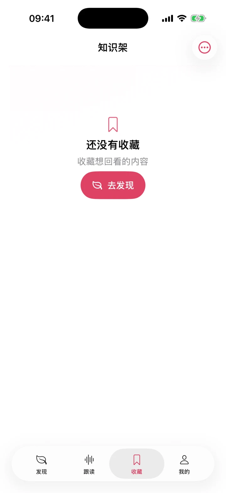

搜索与筛选
在收藏内容中按关键词和学习类型定位条目，避免知识越积越乱。

Keep what matters
内容以学习类型、标题、读音与中文释义组织，空状态也会告诉你下一步去哪里。
在收藏内容中按关键词和学习类型定位条目，避免知识越积越乱。
打开收藏条目后回到与发现页一致的详情、例句、关系和发音能力。
从右上角管理入口导入或导出 JSON。导出保留例句、读音、翻译、标签与顺序；导入跳过重复或无效条目。没有收藏时仍可导入。
收藏数据不依赖云账户。你可以删除单条内容，也可以主动导出备份。